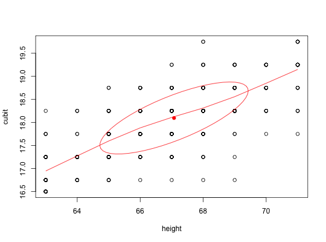

Some historical sets are reported as summary tables of counts in a limited number of bins. Transforming these tables to data.frames representing the original values is useful for pedagogical purposes. (E.g., transforming the original Galton table of height x cubits in order to demonstrate regression.) The column and row names must be able to be converted to numeric values.
table2matrix(x, labs = NULL) table2df(x, count=NULL,labs = NULL)
| x | A two dimensional table of counts with row and column names that can be converted to numeric values. |
|---|---|
| count | if present, then duplicate each row count times |
| labs | Labels for the rows and columns. These will be used for the names of the two columns of the resulting matrix |
The original Galton (1888) of heights by cubits (arm length) is in tabular form. To show this as a correlation or as a scatter plot, it is useful to convert the table to a matrix or data frame of two columns.
This function may also be used to convert an item response pattern table into a data table. e.g., the Bock data set bock.
A matrix (or data.frame) of sum(x) rows and two columns.
#> vars n mean sd median trimmed mad min max range skew kurtosis #> height 1 348 67.07 2.36 67.00 67.11 2.97 63.0 71.00 8.00 -0.09 -0.92 #> cubit 2 348 18.10 0.78 18.25 18.11 0.74 16.5 19.75 3.25 -0.09 -0.60 #> se #> height 0.13 #> cubit 0.04data(bock) responses <- table2df(bock.table[,2:6],count=bock.table[,7],labs= paste("lsat6.",1:5,sep="")) describe(responses)#> vars n mean sd median trimmed mad min max range skew kurtosis #> lsat6.1 1 1000 0.92 0.27 1 1.00 0 0 1 1 -3.20 8.22 #> lsat6.2 2 1000 0.71 0.45 1 0.76 0 0 1 1 -0.92 -1.16 #> lsat6.3 3 1000 0.55 0.50 1 0.57 0 0 1 1 -0.22 -1.95 #> lsat6.4 4 1000 0.76 0.43 1 0.83 0 0 1 1 -1.24 -0.48 #> lsat6.5 5 1000 0.87 0.34 1 0.96 0 0 1 1 -2.17 2.72 #> se #> lsat6.1 0.01 #> lsat6.2 0.01 #> lsat6.3 0.02 #> lsat6.4 0.01 #> lsat6.5 0.01